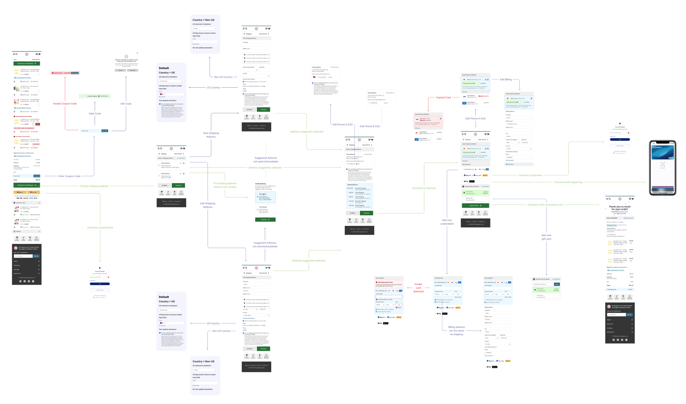
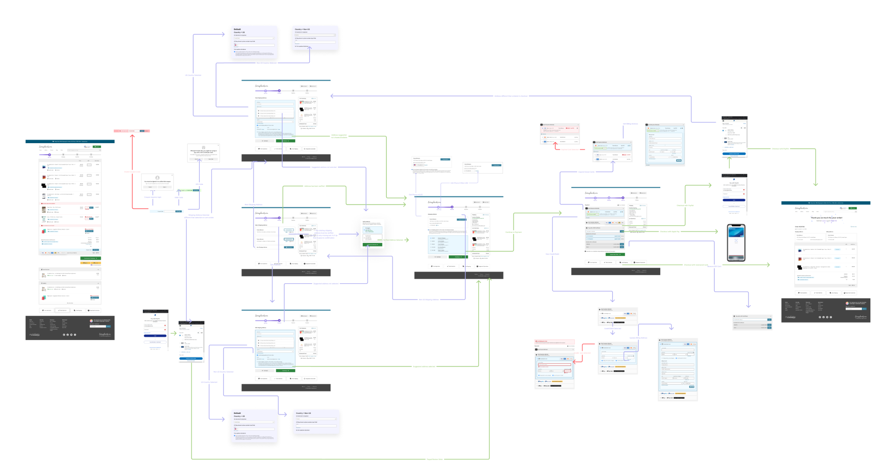

Research Insights and Data-Driven Decisions
Throughout the checkout redesign process, I used tools like GA4 and Matomo to gather and analyze data on user behavior. The insights helped pinpoint major friction points and areas for improvement.
Anomalies Detected
Event anomalies helped identify cart errors, allowing us to address and fix specific pain points within the checkout flow.
Users by Device Category
Device usage data revealed a significant portion of users accessed the site via mobile, highlighting the need for mobile-optimized design.
Cart Page Insights
Device categories and completion rates revealed high abandonment rates, especially on mobile devices.
Shipping Page Insights
Abandonment rates and time spent at this stage indicated confusion with shipping form fields and lack of auto-complete functionality.
Address Change Insights
Further analysis of shipping data revealed pain points with address changes, resulting in long elapsed times.
Payment Page Insights
Payment options and methods analysis revealed high abandonment rates, leading to the integration of Apple Pay and PayPal.
User Journey Mapping
User journey mapping is a vital part of understanding how users interact with the checkout flow. By mapping out every touchpoint and potential obstacle, we were able to visualize the user's path through the checkout process. This helped highlight friction areas, confusion points, and opportunities for optimization, ultimately leading to a smoother and more intuitive checkout experience.
Mobile User Experience
Desktop User Experience
Design Iterations
Design iterations played a crucial role in refining the checkout process. Based on feedback from developers, product owners, and customer service, we continuously iterated on the design to address pain points and improve usability. Below are some of the major iterations, highlighting the areas of improvement based on internal and external feedback.
New Shipping Address Page
This iteration focused on major customer friction points related to the shipping form. Pink notes indicate feedback from developers regarding functionality, while yellow notes highlight pending decisions from the product owner regarding exit points in the shipping stage.
Payment Page (Signed In)
This version addresses friction areas related to power users with multiple saved cards. Feedback from customer service was incorporated, focusing on common inquiries, and final decisions were made on how to handle specific errors.
Before and After: Checkout Flow Redesign
Showcasing the improvements made to the e-commerce checkout process, focusing on user experience, accessibility, and performance.
The original empty cart page had low contrast and minimal calls to action, which caused confusion among users, especially when it came to understanding what to do next. The design lacked clarity and direction for out-of-stock items and had a bland visual appeal, resulting in missed opportunities for users to continue shopping.
The redesigned empty cart page improves clarity with higher contrast and a more prominent call to action, encouraging users to continue shopping. The out-of-stock items are clearly presented, and the new visual appeal engages users more effectively, offering a much clearer path forward, reducing confusion and increasing the likelihood of re-engagement.
The original cart page featured a cluttered and outdated design with poor visual hierarchy. Key elements like out-of-stock items and call-to-action buttons were not clearly visible, which frustrated users and led to abandoned carts. Additionally, the design was not responsive, creating inconsistencies across devices, especially on mobile.
The updated cart page features a clean and organized design, with improved visual hierarchy that highlights important elements like out-of-stock notifications and call-to-action buttons. The responsive design ensures consistency across devices, making it easier for users to navigate and complete their purchases, significantly reducing cart abandonment.
The original order confirmation page lacked clear communication regarding order details and next steps. It had a cluttered layout with low contrast, making it difficult for users to find important information like order number, estimated delivery, and contact details. This created uncertainty and lowered user satisfaction after completing a purchase.
The redesigned order confirmation page features a cleaner layout with higher contrast, making key information like order number, estimated delivery, and contact details easily accessible. The streamlined design provides users with clear next steps and boosts confidence in their purchase, leading to higher satisfaction and fewer support inquiries.
The original order confirmation page lacked clear communication regarding order details and next steps. It had a cluttered layout with low contrast, making it difficult for users to find important information like order number, estimated delivery, and contact details. This created uncertainty and lowered user satisfaction after completing a purchase.
The redesigned order confirmation page features a cleaner layout with higher contrast, making key information like order number, estimated delivery, and contact details easily accessible. The streamlined design provides users with clear next steps and boosts confidence in their purchase, leading to higher satisfaction and fewer support inquiries.
The old payment page had limited payment options and did not offer modern choices like Apple Pay or PayPal, leading to higher cart abandonment rates. The design was not intuitive, with users often getting confused about the steps needed to complete the payment process, especially on mobile devices.
The enhanced payment page now offers multiple modern payment options, including Apple Pay and PayPal, catering to user preferences and reducing friction. The overall design is more intuitive, guiding users through the payment process with clearer instructions and better mobile responsiveness, leading to a smoother checkout experience.
The original order confirmation page lacked clear communication regarding order details and next steps. It had a cluttered layout with low contrast, making it difficult for users to find important information like order number, estimated delivery, and contact details. This created uncertainty and lowered user satisfaction after completing a purchase.
The redesigned order confirmation page features a cleaner layout with higher contrast, making key information like order number, estimated delivery, and contact details easily accessible. The streamlined design provides users with clear next steps and boosts confidence in their purchase, leading to higher satisfaction and fewer support inquiries.